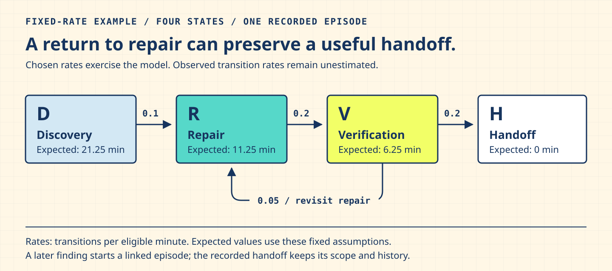

Readable tables, proportionate verification, and estimates worth carrying forward.
A table keeps a question together. Its headings, rows, values and units keep each number’s meaning available while a reader compares choices. This account also examines how instruction and context engineering can help a configured AI system estimate verification work at the beginning, choose focused unit, integration, regression, or browser checks, and recognize when the full suite belongs in the completion path.
A small visible problem exposed a larger agreement
An investment table still had its borders and colored headings. Inside several narrow columns, ordinary words had broken into fragments. The comparison was technically present and practically difficult to read. Embedded prototypes revealed a second pressure: the child document could receive substantially less room than the surrounding browser window suggested.
The useful response began with the visitor's task. Preserve the comparison, make its scroll route discoverable, and keep each value attached to its meaning. As repairs spread across a repository, a second question emerged: which unit, integration, regression, or browser observations should be renewed after a change, when does the full suite become the fitting closure, and what would each route cost in time, tool work, context, and tokens?
At task initiation, an instruction-and-context packet can carry changed files, dependent contracts, protected behaviors, plausible faults, target viewports, prior observations, and release conditions. The research question is whether a configured AI system can use that packet to estimate a fitting verification sequence, revise the estimate as findings arrive, and leave the final acceptance decision with its accountable reader.
Two results / Distinct standing
Table repairs are delivered. Verification-timing research remains exploratory.
This account connects the accepted application work with two reusable skills and a descriptive study snapshot. Each retains its own evidence and next question.
Visitor job
Compare records, edit a relevant field, and carry an interpretable result onward.
Application evidence
Source-owned repairs, targeted browser observations, print checks and independent review.
Reusable methods
Semantic table design and embedded prototype layout, with distinct triggers and completion states.
Research question
Can task context help a configured AI system choose focused or full verification, estimate its operating cost, and revise the plan as observations change?
Current study standing
Prospective recording exercised; selection and timing effectiveness, calibration, and net time, token, and interaction savings remain open.
Reading date
3 October 2026. Source links distinguish this account from later application and research changes.
01 / Readable comparison / Meaning before compression
Let the table remain a table
The page can become narrower while the comparison keeps the space its relationships need.
A person comparing alternatives benefits from seeing the same field in the same column. Native captions, column headings and row headings make that relationship available in the document as well as on screen. The WAI table guidance explains the corresponding markup, including explicit associations for complex headers.
For a genuinely two-dimensional comparison, a named, keyboard-focusable local scroll region can preserve readable columns while surrounding prose reflows. WAI's Reflow explanation distinguishes the table's two-dimensional relationship from the text inside individual cells. A wide table still needs readable cell content, reachable edges and an understandable route through the page.
The embedded frame has its own geometry. In one recorded Shared Surface renewal, a 320-pixel parent contained a 251-pixel child viewport. The narrower document was the relevant layout input. That observation changes where a breakpoint belongs; the nominal device category alone leaves the child width unspecified.
A relationship map: meaning joins topic, row, field and value; space joins parent, child and local scrolling; evidence joins a source, a behavior and its observation.
Keep supplemental context attached to the right thing
A data-label attribute can carry helpful context for a named extractor or responsive presentation. Its wording should identify a field or record in ordinary language. Native headers continue to own the table relationships; the custom attribute supplies additional, application-defined context.
A scenario label such as Principal design experience can be useful when a row travels alone. A technical path such as resume.experience[0] keeps its exact meaning in the visible code or structured value that owns it. A consumer-specific binding may earn that path a place in supplemental context; a dotted string by itself establishes neither parser support nor hiring-system value.
The same care applies to units, names and absence. A compound unit retains its notation. A blank field remains distinct from a measured zero. A renamed record updates its derived labels at the prototype's actual commit event, while the active editor keeps focus and selection.
02 / Reusable methods / Choose by the receiving job
Two skills, two distinct results
A useful skill makes a fitting move easier to recognize, perform and finish. Its value appears in the changed artifact and the effort it saves the next team when it resumes the task.
These methods formed through application repairs, review findings and human correction. Their contracts preserve the conditions that changed decisions: native header identity, literal-safe labels, measured child widths, visible focus, and evidence whose source can be recovered. The repository skill format keeps a compact working method above conditional references, with poor-fit cases and recovery routes close at hand.
Meaning and comparison
Semantic table design
Use for: native header relationships, row completeness, supplemental wording, readable comparison geometry, or records extracted in pieces.
Finish with: a table whose meaning and receiving behavior are explicit, plus the smallest fitting observation or a precisely owned remaining question.
Small first use: take one difficult row, recover its topic, identity, field, value and unit, then inspect the corresponding native relationships.
Use for: a prototype that behaves differently inside its parent page, where controls, tables, focus, paint clearance or onward navigation become difficult to use.
Finish with: a measured parent/child contract and a source-owned repair, or a decision-ready Issue with the missing observation.
Small first use: measure the actual child viewport, reproduce one consequential behavior, and compare that behavior with the standalone document.
Continue to the complete collaboration-skills catalog. Source publication, evidence maturity and permission to act remain separate: a reusable method supplies guidance, while the receiving task supplies authority.
A small trial can also justify a simpler route
An isolated wording correction may need direct reasoning and one source edit. A damaged state exchange belongs with the stateful-artifact contract. A live iframe mismatch belongs with its delivery owner. Selecting a smaller or different method preserves the useful distinction and keeps the response proportionate to the task.
For a team, the practical return is shared orientation: a designer can name the comparison, an engineer can locate its owner, and a reviewer can identify the observation that would change acceptance. Maintenance time, tool access and decision rights still shape whether that possibility becomes useful practice. Cross-team and cross-model transfer remain questions for further situated use.
03 / Verification / A result stays attached to its question
Preserve useful evidence, renew the changed claim
A repository-wide discovery pass is useful for locating pressure. Acceptance asks a more specific question. Can the last column be read from both edges? Does a keyboard journey enter and leave the scroll region? Does a reordered control remain visible? Does the printed table retain every column and complete row?
The accepted wave retained a 93-record Core account with explicit source relationships: 81 exact material-source records, 11 hiring non-print continuity records and one A3 desktop continuity record. The coverage reconciliation preserves those distinctions alongside subsequent focused renewals and separately owned findings. A single total would conceal how the evidence was actually carried.
Choose the observation that can answer the changed question
Changed question
Fitting observation
Evidence retained
Supplemental row wording
Native header agreement, literal-value preservation and regeneration.
Earlier geometry keeps its named source and scope; the new wording earns its own semantic check.
Embedded control width
The actual parent/child size, readable label, focus and affected interaction.
Unchanged families retain their observations under the existing identity rules.
Observer definition
A counterexample fixture, then dependent cases under the corrected definition.
Earlier records remain inspectable with their narrower original meaning.
Printed comparison
Saved output, readable columns, complete rows and clearance from fixed controls.
Screen and state-exchange results continue to describe their separate behaviors.
Scroll within the table when needed. The choices describe evidence ownership; the receiving question determines the fitting test sequence.
At the beginning of a task, the same changed-question frame can produce a proportional verification plan. Local logic points toward focused unit checks. Contracts that cross components point toward integration checks. Affected route families point toward targeted regression. Rendered interaction, focus, text fit, responsive layout, and cross-document behavior point toward browser or Playwright observation. Broad dependency reach, release conditions, or unresolved observer risk make the full suite the fitting closure.
Humans often notice a clipped label, obscured control, or broken reading order during ordinary visual inspection. A configured AI system benefits when that information enters its working context through the DOM and accessibility tree, rendered screenshots, geometry probes, or browser-run outcomes. Test selection therefore estimates observation needs alongside execution cost. A fitting sequence aims for the required confidence with less avoidable elapsed time, tool use, token and context churn, and human coordination; its return states both the behavior established and the observations that remain.
Checkpointing helps only when a record carries the source, observation definition, planned case and required artifacts that make reuse meaningful. A screenshot belongs to that record through its path and digest. Final telemetry arrives after artifact validation and before publication, so a late observed error can still keep the case open. Atomic publication keeps an interrupted write recoverable.
These safeguards support a practical rhythm: resolve known source defects together, prove the observer's consequential boundary, run the affected cases, and return the result. A new defect can reopen a case. Earlier useful observations stay available while the changed claim receives fresh evidence.
04 / Exploratory study / Recording and effectiveness are different findings
The forecast target was at least one new consequential application finding in the complete declared campaign. The following snapshot ends at the recorded disposition on 3 October 2026 at 20:45:34 UTC; later application work belongs to a separate observation period.
The protective aim is to interrupt an expensive cycle of apparently complete checks, newly discovered defects and repeated broad reruns.
The research branch explored a decision aid for recognizing useful verification windows. A window is a bounded opportunity to observe a coherent change, rather than an assumed final moment when every defect has already surfaced. Required behavior and safety checks retain their acceptance role; an advisory estimate can help choose timing only within that boundary.
The recorded current-wave tranche contains nine prospective forecasts and nine terminal dispositions. Forecasts preceded execution, and the outcome account followed independent adjudication. The snapshot below describes those records. It leaves each campaign's censoring, shared source and continuation relationship visible.
A labeled count plot fits the small categorical record set. Each square represents one terminal disposition. The separate model panel preserves the distinction between recorded outcomes and an eligible statistical update.
Research snapshot: nine recorded terminal dispositions as of 3 October 2026
Disposition
Record count
Interpretation
Censored or null
4
The completed observation needed for the model's outcome remains unavailable. Actual positive findings within an incomplete run stay recorded.
Scoped zero
3
The completed, named observation supplies a zero for its own window. Dependence and eligibility still govern statistical use.
Positive
2
The named event was observed. A later repair renewal preserves the earlier finding and adds its own result.
Unit: terminal disposition. Population: the recorded local tranche. The research record carries the protocol, adjudication and publication route.
A probability needs an event and an eligible observation
Both cohorts currently contribute zero eligible likelihood terms. Initial opportunities were censored; continuations were dependent supplements within the same cluster. The operational Beta model therefore retains a prior-only predictive value of 0.5, with 0.25 and 0.75 sensitivity settings. These values express assumptions for the declared event, rather than a measured success rate or confidence in the finished product.
How many fewer browser runs occurred? That difference remains unmeasured. Historical launch and case-attempt counts describe work that happened. Establishing a reduction requires a comparable policy, consistent denominators and a complete account of setup, execution, repair and review costs. Case selection and launch timing can change those costs in different ways.
Probability with a named job
A probability needs a question
A useful estimate makes uncertainty easier to discuss. Its first obligation is to say what might happen, to which unit of work, and over what interval.
The independent design review changed the proposed method before it became a runnable reference. An early rule combined defect yield, detector sensitivity, avoided loss, and repeat cost. The review asked a more precise question: what changes if a check runs now rather than at the next required gate? That comparison kept mathematical detail connected to the protective purpose: useful discovery, coherent repairs, and evidence that remains valid through handoff.
The current shadow observer predicts one event: at least one new consequential application finding in a complete, independently adjudicated campaign. A campaign contributes at most once per repair cluster within its named cohort. Viewports, cells, retries, and follow-on checks retain their observations while sharing the episode's dependence. An empirical estimate needs eligible, comparable outcomes; selecting a check also selects the population to which its yield can speak.
What actually guided execution? The adapter's declared rules returned hold-coherent-batch, run-focused, or run-required-closure. Source review, fitting deterministic checks, required final evidence, and human authorization governed those choices. The accompanying probability was a shadow forecast. A learned threshold or automatic expected-cost optimizer remains a separate research possibility.
One event, three different quantities
Let θ be the unknown discovery rate for comparable eligible campaigns. A Beta prior describes uncertainty about that rate. The next campaign has a binary outcome, Y: either the defined finding occurs or the completed observation establishes a scoped zero.
Here a and b are positive prior shape parameters; n is the number of eligible campaigns; and s counts their event outcomes. The prior-only predictive means are 0.5 for Beta(1,1), 0.25 for Beta(1,3), and 0.75 for Beta(3,1). The frozen nine-record snapshot has n = 0, so these remain assumptions. A value of 0.5 describes that chosen prior's next-event prediction. Release readiness continues to come from the required evidence and review.
The reference also asks P(θ > 0.2): how much prior probability lies above a chosen 20% discovery-rate threshold? Its answers are 80%, 51.2%, and 99.2% for the same three priors. Those are probabilities about a rate exceeding a threshold, rather than the next-campaign probabilities above. The 20% value was selected to demonstrate sensitivity; an operational cutoff would need a receiving decision and a defensible cost or risk basis.
A third quantity asks whether any event occurs across several future opportunities. That calculation is useful only when the opportunities and dependence assumptions fit the question. The Beta-binomial formulation and posterior predictive interpretation provide the mathematical basis; the repository's observation contract determines which records can enter it.
Inspect the Beta calculation, denominator, and sensitivity
Write posterior shapes as A = a + s and B = b + (n − s). Multiplying the Bernoulli likelihood by the Beta density gives powers θA−1(1−θ)B−1; normalization gives Beta(A, B). Its mean is A/(A+B) and variance is AB/[(A+B)2(A+B+1)]. The distribution describes uncertainty under the model, rather than confidence supplied by completed repository checks.
The upright B denotes the beta function. The fraction integrates the chance of k consecutive zero outcomes over the uncertain rate. Subtracting that probability from one gives at least one event. This predictive model assumes conditionally independent opportunities sharing a rate within the chosen cohort. Correlated reruns and changes in selection policy call for separate treatment.
The review made a consequential distinction: qk is a probability, while the expected number of events is kA/(A+B). A repeat-cost term qkC fits a policy that pays for at most one such repeat. A policy that repeats after every event needs its expected count and actual cost structure.
Discovery yield and later evidence invalidation also need separate event definitions and models. An unselected check has an unknown outcome. An interrupted campaign may retain a consequential finding while leaving its full campaign outcome censored. The recording policy preserves that distinction and the positive finding; a completed, eligible observation supplies a genuine zero.
Inspect the check-now versus defer decision
The comparator is the next specified opportunity to check. If mandatory closure would find the same defect before release, an earlier check may buy reduced rework, earlier resolution, or protection during an intervening exposure. Its benefit is that increment over deferral.
I is the available information; L is loss; and C is verification cost, expressed in comparable units. Under a simplified discovery-mediated benefit, the left side can be written pℓ: event probability times conditional incremental benefit, including mitigation success and timing.
The original proposal multiplied discovery yield by detector sensitivity again. Because the defined event already includes discovery, the revised rule counts that mechanism once. A separate prevalence-times-sensitivity model would need separate observations. Common mandatory checks cancel only when their scope and cost are genuinely equal under both policies.
Uncertainty can justify a budgeted exploration choice when a focused result could change a named decision. Uncertainty alone supplies neither a measured value of information nor permission to bypass a required gate. The study therefore kept mandatory checks authoritative and the expected-loss rule as a transparent design heuristic, with its benefits and costs still to be elicited and tested.
Rates, transitions, and the limits of a forecast
Model the work before predicting its finish
A return to repair can be useful discovery. The protective question is whether the team reaches a coherent handoff with useful evidence during the repair cycle, rather than merely producing fewer returns.
The process model distinguishes Discovery (D), Repair (R), Verification (V), and Handoff (H). These are mutually exclusive states of a recorded episode. Handoff closes its accepted scope and revision; a later finding receives a linked follow-up. Time before the first closure candidate, coverage, late findings, and time after that candidate remain part of the account. Postponing verification can reduce visible reopening counts while increasing the cost of discovery.
Some coverage choices are enumerable before they become probabilistic. A Cartesian matrix can cross routes, viewports, states, input classes, and interactions to define the eligible cases and expose which combinations a focused run would leave for closure. Time-to-finding and transition models answer a different question: how observations may arrive across an episode and how uncertainty changes with exposure.
SVG contributes a compact geometric oracle as well as a visual explanation. Its XML source exposes the viewBox, explicit x and y coordinates, transforms, groups, labels, and painter’s order to people and AI systems with source access. Those coordinates can reveal candidate collisions, occlusion, and arrow-body misalignment. Font metrics, responsive layout, and final paint remain browser observations, so source inspection and Playwright answer complementary questions.

One fixed-rate scenario from the runnable reference. The complete model also permits Discovery to Verification, Repair to Discovery, and Verification to Discovery. Diagram geometry represents relationships; the rates are declared scenario inputs.
The chosen scenario uses D to R at 0.1, R to V at 0.2, V to R at 0.05, and V to H at 0.2 transitions per eligible minute. Its calculated expected times to handoff are 21.25, 11.25, 6.25, and 0 minutes from D, R, V, and H respectively. These values exercise a specified model. Observed durations and defensible process assumptions would be needed to estimate the repository's real trajectory.
Inspect the event-time model and waiting-time density
For an event such as evidence invalidation, let N count events during T minutes actually exposed to that event. A constant-rate Poisson likelihood and Gamma(a, rate=b) prior give posterior shape A=a+N and rate parameter B=b+T. Here λ has units of events per minute, while B has units of minutes.
The survival probability is the posterior average of exp(−λh). Its complement gives the cumulative probability; differentiating gives the density. Density has inverse-minute units: probability belongs to an interval, rather than to a single density height.
The worked Gamma(1, rate=60 minutes) prior gives a 1/7 chance of an event within ten eligible minutes. Pauses, leaving the at-risk state, or reaching handoff change the calendar-time interpretation. Competing exits need a process hitting-probability calculation. The operational shadow forecasts used a separate model; this event-time model remains a research example.
For the same event, a known constant rate and fixed exposure e connect the descriptions through pe = 1 − exp(−λe). This compares invalidation per opportunity with invalidation over time. Discovery yield describes a different event. Unequal exposures and changing regimes need explicit treatment, and two descriptions of the same observations remain one evidence source.
Inspect the master equation, forward evolution, and backward passage time
A continuous-time Markov chain is the model class. The finite-state master equation is its forward Kolmogorov equation. With a row probability vector π and generator Q, off-diagonal entries are nonnegative transition rates and each row sums to zero.
For each state, probability arrives through incoming edges and leaves through outgoing edges. The zero row sums conserve total probability. A constant generator assumes memoryless dwell times within a stable regime. Completed inventories, accumulated findings, and time already spent repairing can make that approximation inappropriate. The finite-state Kolmogorov equations establish the mathematical relationship; local observations establish whether it is a useful account of this work.
The backward first-passage calculation asks a different question: starting in each state, how long until the episode reaches H? Let QT contain the D, R, and V rows and columns, and let τ contain their expected passage times.
A first-step argument accounts for the waiting time to the next transition plus the remaining expectation from the next state. The scenario gives τD = 10 + τR, τR = 5 + τV, and τV = 4 + 0.2τR. Solving yields the four values accompanying the diagram.
Finite expected passage times require eventual absorption and a suitable nonsingular transient generator. Identifying rates from data and establishing absorption are distinct tasks. With uncertain rates, the desired quantity is the average of τ(Q) over those rates, rather than τ evaluated at the mean generator.
A useful warning comes from a single Gamma(A, rate=B) exit: E[1/λ] = B/(A−1) only when A>1; the expectation diverges for A≤1. The Gamma(1,60) example therefore has a finite ten-minute event probability and an infinite predictive mean waiting time. Long, slow possibilities can dominate an average. A bounded horizon can remain informative when an average finish time is unsuitable.
Why Fokker–Planck stayed a research candidate
The diffusion proposal would describe a meaningful continuous state x with drift μ and diffusion amplitude σ. Under an appropriate Itô model, the corresponding density ρ evolves as follows:
Drift would describe systematic movement in the state; diffusion would describe stochastic variation. A continuous readiness score alone establishes neither. The review asked for a defensible coordinate, appropriate Markov behavior, separation of measurement noise from process variation, identifiable coefficients, and meaningful boundary conditions. The actual study retained the discrete episode description and deferred diffusion fitting.
The diffusion-equation derivation explains the conservation principle. Applying it to collaboration would require an independently justified measurement model. The equation's sophistication is useful only when the observation and receiving decision support it.
Inspect numerical thresholds and the independent calculation
The reference's numerical limits protect a runnable example. They have a different job from a decision threshold or an estimated rate. Positive shapes, rates, and posterior parameters use [10−100, 106]; nonnegative horizons, exposures, counts, and aggregate exit rates are bounded by 106. The integer-shape Beta tail requires a shape sum at most 1,000.
Forward propagation uses uniformization: choose ν at least as large as every exit rate, form the stochastic matrix P = I + Q/ν, and average its repeated steps with Poisson weights. The implementation splits time so each interval has νΔt≤8, caps intervals at 10,000 and terms at 200, and checks the omitted probability mass. These choices bound numerical work and truncation; they carry no claim about a safe collaboration duration.
The backward solver rejects pivots below 10−12 and estimated infinity-norm condition numbers above 1010. Unsupported calculations return an explicit error rather than a plausible-looking answer. Stable log1p and expm1 arithmetic preserves tiny positive probabilities; posterior subtraction groups b + (opportunities - events) to preserve the prior.
Independent review supplied concrete counterexamples: overflowing finite inputs, tiny probabilities rounded to zero, sparse probability vectors, positive events with zero exposure, and incomplete state vectors accepted by a reference comparison. The repaired reference and parameterized fixtures make those boundaries executable. The standard-library Python calculation uses exact rational arithmetic for selected scenarios, providing a distinct arithmetic route. Agreement establishes those calculation cases; observed protective benefit remains an empirical question.
05 / Further inquiry / Let each experiment answer its own question
Separate what to rerun from when to run it
Selection and execution cost
The paired-replay study compares full and selected execution with pinned source, equivalent evidence and a bounded measurement budget. Its question concerns what to rerun and the cost of doing so.
Timing and protective value
The verification-window study needs a prospective comparison of eager checks after repairs and checks after coherent batches. Its question concerns timing, reopened evidence and total collaboration burden.
Prediction and calibration
The shadow-prediction study needs independent eligible outcomes, held-out observations and explicit missed-defect limits. Adaptive scheduling carries a further decision about acceptable risk.
A useful stopping point
A method can remain a transparent recording aid if its added prediction changes little. A team can retain the source-bound checkpoints and targeted checks while resting the more elaborate model. The learning remains available.
More sophisticated mathematics earns a place when observations identify the quantities it needs. Transition models need defined states and rates. Event-rate models need exposure. A diffusion model needs a measurable continuous coordinate and defensible drift and diffusion terms. The current evidence supports a simpler, explicit account of eligibility and uncertainty.
The continuing investment belongs to people as well as tools: accessible reading, inspectable source, reliable observers, review capacity and room to report a partial result. A useful working method protects that work while leaving the next choice small enough to revise.
WHATWG custom data attributes: application-defined metadata. The repository's supplemental-label wording is a local convention with named receiving uses.
Visual Fidelity Atlas: question, data shape, visual form and evidence companion. This article uses a relationship map and a labeled count plot, each with an adjacent text equivalent.
Supportive Change Writing Exemplars: the Warm Practical Register and Evidence and Structural Balance tone goals guide the adult-to-adult register, concrete agency and proportionate claims.
Current evidence. Repository observations, accepted changes, web standards, and the linked research support the table and proportionate-verification methods under their stated conditions. General skill transfer, model efficacy, and population-wide accessibility remain active empirical questions.